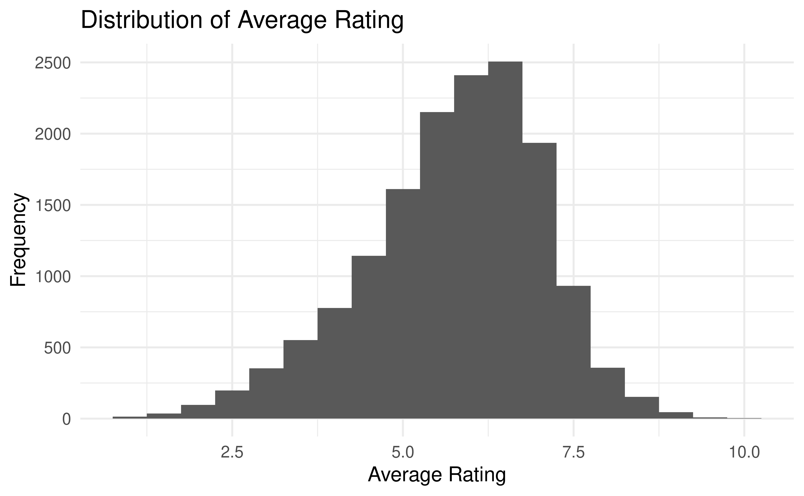
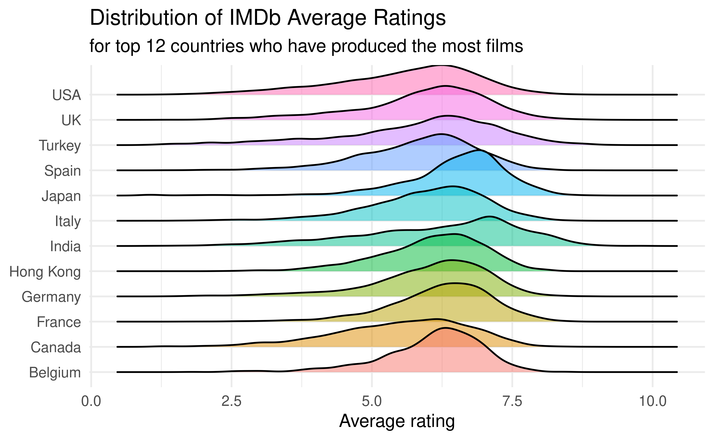
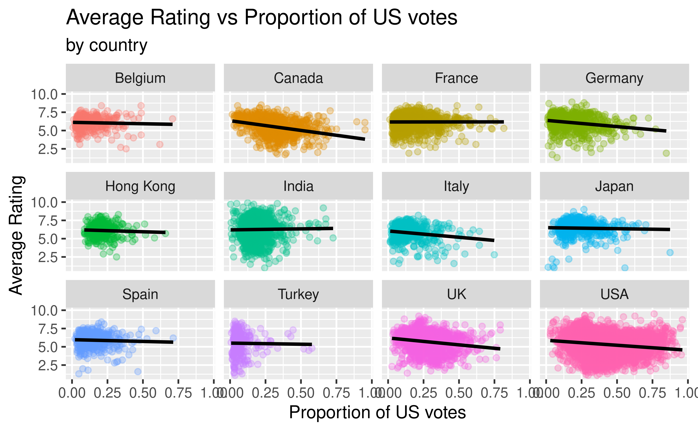
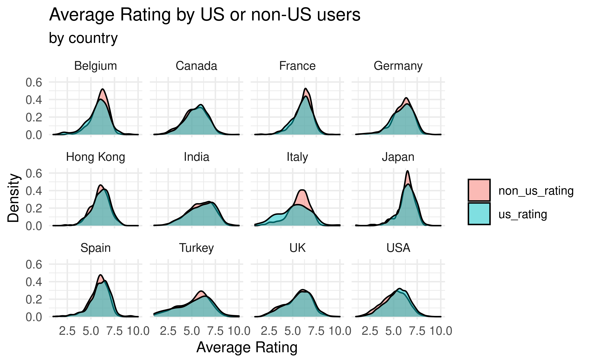
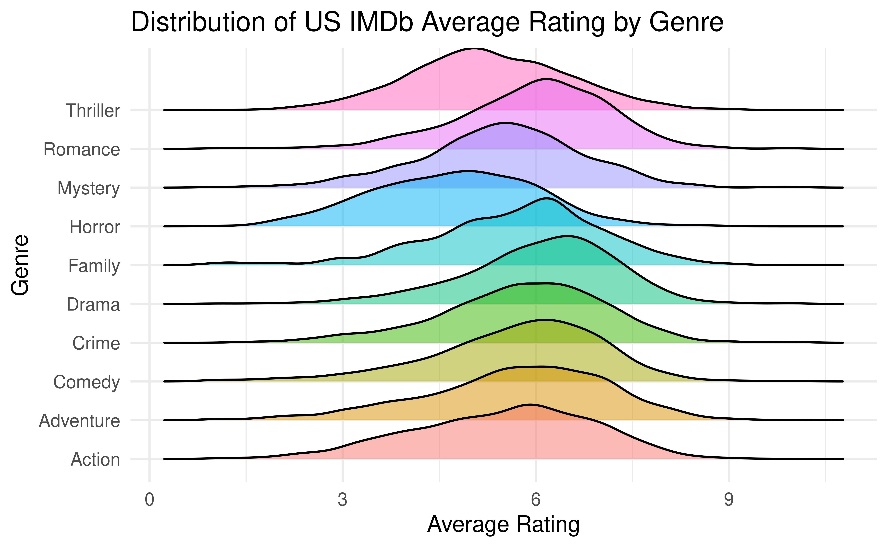

| Country | Mean Rating | Median Rating |
|---|---|---|
| Japan | 6.440102 | 6.5 |
| India | 6.255296 | 6.4 |
| France | 6.173746 | 6.3 |
| Germany | 6.088117 | 6.3 |
| Belgium | 6.069436 | 6.2 |
| Hong Kong | 6.113081 | 6.1 |
| Spain | 5.901798 | 6.0 |
| Italy | 5.773190 | 5.9 |
| UK | 5.689785 | 5.9 |
| Turkey | 5.434906 | 5.8 |
| Canada | 5.494717 | 5.6 |
| USA | 5.329991 | 5.4 |
## Picking joint bandwidth of 0.255
## `geom_smooth()` using formula 'y ~ x'
## # A tibble: 13 × 5
## term estimate std.error statistic p.value
## <chr> <dbl> <dbl> <dbl> <dbl>
## 1 (Intercept) 5.89 0.0713 82.5 0
## 2 prop_us_votes -0.618 0.0832 -7.43 1.14e-13
## 3 countryCanada -0.126 0.0851 -1.48 1.39e- 1
## 4 countryFrance 0.261 0.0787 3.32 9.15e- 4
## 5 countryGermany 0.255 0.0849 3.00 2.68e- 3
## 6 countryHong Kong 0.404 0.0992 4.07 4.63e- 5
## 7 countryIndia 0.262 0.0770 3.40 6.71e- 4
## 8 countryItaly -0.550 0.0908 -6.06 1.38e- 9
## 9 countryJapan 0.711 0.0885 8.03 1.05e-15
## 10 countrySpain 0.219 0.0933 2.34 1.92e- 2
## 11 countryTurkey -0.472 0.102 -4.64 3.59e- 6
## 12 countryUK 0.0109 0.0801 0.136 8.92e- 1
## 13 countryUSA -0.193 0.0760 -2.54 1.10e- 2
<<<<<<< HEAD## `geom_smooth()` using formula 'y ~ x'## How does the proportion of US votes impact the rating?
## # A tibble: 13 × 5
## term estimate std.error statistic p.value
## <chr> <dbl> <dbl> <dbl> <dbl>
## 1 (Intercept) 5.89 0.0713 82.5 0
## 2 prop_us_votes -0.618 0.0832 -7.43 1.14e-13
## 3 countryCanada -0.126 0.0851 -1.48 1.39e- 1
## 4 countryFrance 0.261 0.0787 3.32 9.15e- 4
## 5 countryGermany 0.255 0.0849 3.00 2.68e- 3
## 6 countryHong Kong 0.404 0.0992 4.07 4.63e- 5
## 7 countryIndia 0.262 0.0770 3.40 6.71e- 4
## 8 countryItaly -0.550 0.0908 -6.06 1.38e- 9
## 9 countryJapan 0.711 0.0885 8.03 1.05e-15
## 10 countrySpain 0.219 0.0933 2.34 1.92e- 2
## 11 countryTurkey -0.472 0.102 -4.64 3.59e- 6
## 12 countryUK 0.0109 0.0801 0.136 8.92e- 1
## 13 countryUSA -0.193 0.0760 -2.54 1.10e- 2## Picking joint bandwidth of 0.243
## # A tibble: 6 × 5
## term estimate std.error statistic p.value
## <chr> <dbl> <dbl> <dbl> <dbl>
## 1 (Intercept) 5.49 0.0255 215. 0
## 2 genreAnimation 0.786 0.0641 12.3 1.85e-34
## 3 genreComedy 0.223 0.0312 7.14 9.70e-13
## 4 genreCrime 0.328 0.0398 8.24 1.90e-16
## 5 genreDrama 0.569 0.0292 19.5 4.69e-84
## 6 genreHorror -0.665 0.0391 -17.0 2.20e-64R squared: 7.5562686%
6cee77440efc81f27a60490ab174a7ccb15eaa33